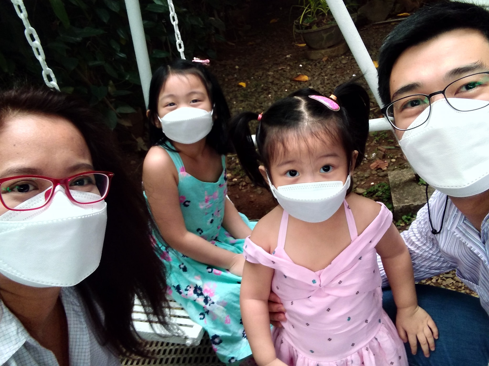

Homeschooling Sucess is Good Parenting
Kevin and Jieyen with Kaely (Grade 3) and Kari | Homeschooling Since 2021

For #calledtohomeschool parents, Kevin and Jieyen, homeschooling success is also good parenting—the intentional discipleship of the children.
Watch a short testimonial video of the Vicente family below!